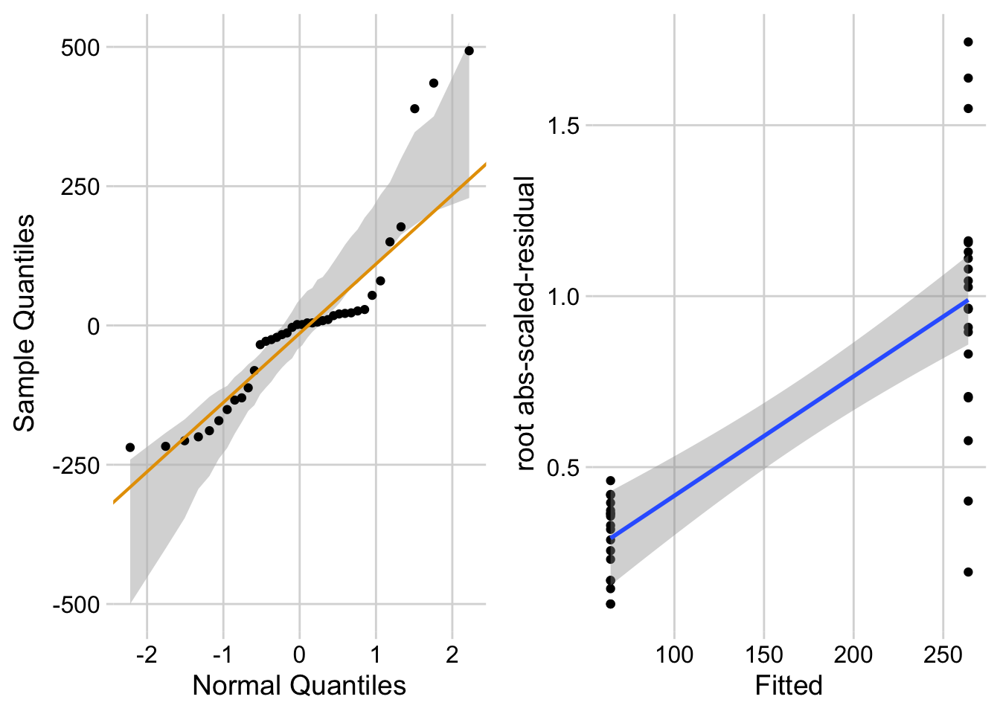
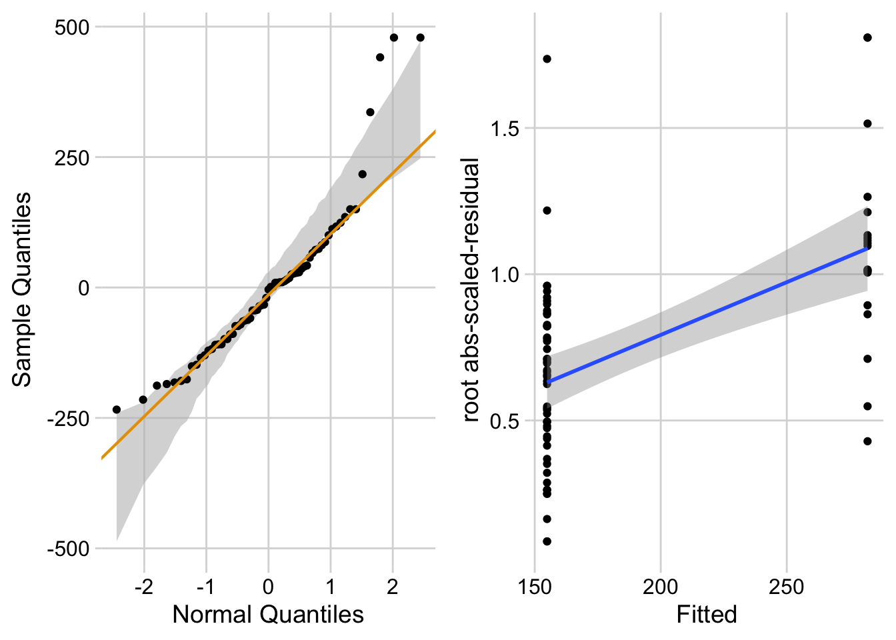
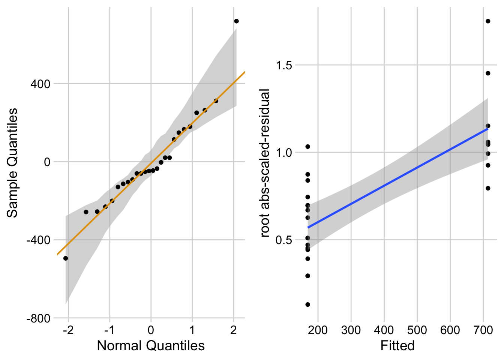
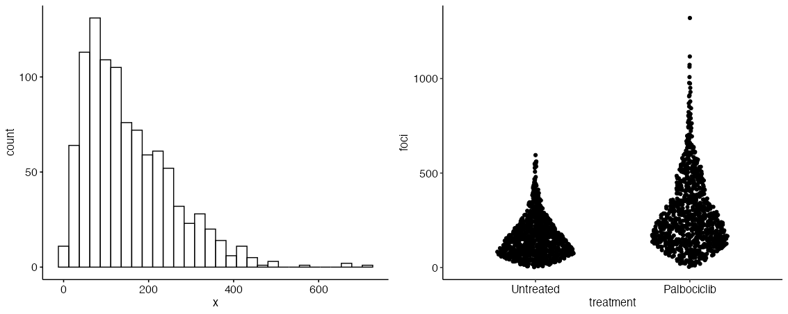
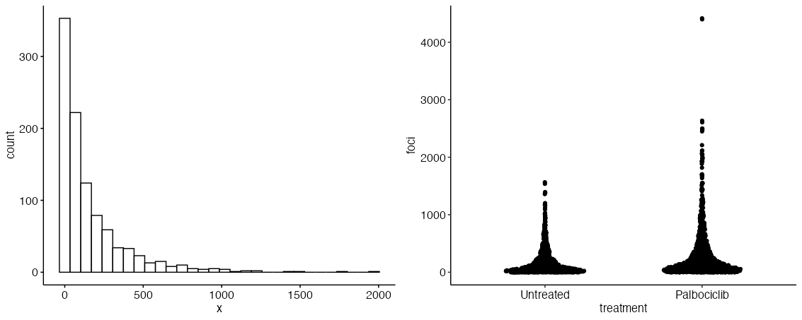

Many research biologists use traditional non-parametric tests such as the Mann-Whitney U test in place of parametric tests such at a t-test. Traditional non-parametric tests were invented in the pre-desktop computer era when statisticians had to compute test statistics with a pencil (or punch cards). Ever since desktop computers, there really hasn’t been a need for traditional non-parametric tests. More modern alternative are
Randomization tests. These are excellent but can be tricky with complex experimental designs. They also are typically implemented in software like GraphPad Prism.
Generalized linear models. These are a more modern statistical tool for data
the design is actually 2 x 2 factorial but I’ll treat it as if its 4 x 0.
The experiment
Setup
Fig 1b
Code
data_from <-"Release of mitochondrial dsRNA into the cytosol is a key driver of the inflammatory phenotype of senescent cells"file_name <-"41467_2024_51363_MOESM4_ESM.xlsx"file_path <-here(data_folder, data_from, file_name)read_fig1b <-function(range_in ="B5:C25",label_in ="IMR-90"){read_excel(file_path,sheet ="1b",range = range_in,col_names =TRUE) |>data.table() |>melt(variable.name ="treatment",value.name ="foci") |>na.omit()}fig1b <-data.table(NULL)fig1b <-rbind( fig1b,data.table(cell_type ="IMR-90",read_fig1b(range_in ="B5:C25") ))fig1b <-rbind( fig1b,data.table(cell_type ="SK-MEL-103",read_fig1b(range_in ="E5:F55") ))fig1b <-rbind( fig1b,data.table(cell_type ="A549",read_fig1b(range_in ="H5:I22") ))# output as clean excel filefileout_name <-"fig1b-2x0 counts-Release of mitochondrial dsRNA into the cytosol is a key driver of the inflammatory phenotype of senescent cells.xlsx"fileout_path <-here(data_folder, data_from, fileout_name)write_xlsx(fig1b, fileout_path)
Replicate the results – linear model equivalents of t-tests
Code
# lm1 <- lm(foci ~ treatment, cell_type == "IMR-90", data = fig1b)# huh, I mindlessly used this spec of cell_type and only realized after that it actually worked. This is really nice!lm1 <-lm(foci ~ treatment, data = fig1b[cell_type =="IMR-90", ])coef(summary(lm1))
Estimate Std. Error t value Pr(>|t|)
(Intercept) 64.38889 38.75754 1.661325 0.1053338398
treatmentDoxorubicin 199.56111 53.42358 3.735450 0.0006473833
Code
lm2 <-lm(foci ~ treatment, cell_type =="SK-MEL-103", data = fig1b)coef(summary(lm2))
Estimate Std. Error t value Pr(>|t|)
(Intercept) 154.9000 20.85510 7.427438 2.589081e-10
treatmentPalbociclib 127.1526 39.74295 3.199376 2.105030e-03
Code
lm3 <-lm(foci ~ treatment, cell_type =="A549", data = fig1b)coef(summary(lm3))
Estimate Std. Error t value Pr(>|t|)
(Intercept) 168.8824 58.07871 2.907819 7.716990e-03
treatmentBleomycin 545.1176 98.71483 5.522146 1.115282e-05
A Student’s (equal variance) t-test replicates the p-values.
Let’s check the models
Code
ggcheck_the_model(lm1) # compare to above

Code
ggcheck_the_model(lm2)

Code
ggcheck_the_model(lm3)

The all have QQ plots showing right skew expected of count data and lm1 and lm2 are quite severe. All have spread plots showing variance increasing with mean, expected of count data. Certainly a count glm model is best model to fit.
This is a simple simulation to look at Type I error (false discovery) and power (true discovery) with data that look those in fig1b for the SK-MEL-103 cell type (middle panel). First, let’s use a negative binomial fit to get the observed shape parameter theta, which is 2.25. I then use the mean of the control and treatment groups and the observed theta to create a large (n = 1000) fake dataset. The distribution of the fake foci counts for the control looks like the left panel and a plot of the data for both groups looks like the right panel in the figure below.
b0 <-coef(summary(glm2.nb))["(Intercept)", "Estimate"]b1 <-coef(summary(glm2.nb))["treatmentPalbociclib", "Estimate"]mu1_obs <-exp(b0)mu2_obs <-exp(b0 + b1)# what this looks like with a big sampleset.seed(1)gg1 <-gghistogram(rnegbin(1000, mu = mu1_obs, theta = theta_obs))fd <-data.table(treatment =rep(c("Untreated", "Palbociclib"), each =1000),foci =c(rnegbin(1000, mu = mu1_obs, theta = theta_obs),rnegbin(1000, mu = mu2_obs, theta = theta_obs)))fd[, treatment :=factor(treatment, levels =c("Untreated", "Palbociclib"))]gg2 <-ggplot(data = fd,aes(x = treatment,y = foci)) +geom_sina(scale ="width", maxwidth =0.5) +theme_pubr()gg <-plot_grid(gg1, gg2, ncol =2)pngfile <- fs::path(knitr::fig_path(), "gg.png")agg_png(pngfile, width =30, height =12, units ="cm", res =96, scaling =1)plot(gg)invisible(dev.off())knitr::include_graphics(pngfile)

Next, let’s create two versions of the simulation.
In the first, I very the shape parameter theta to have values 0.5, 1, 2, 4. At a constant mean (the parameter mu), the smaller the shape parameter, the more skew. Or the larger the shape parameter, the more closely the fake data would approximate a normal distribution. I use a sample size of n = 30.
In the second, I use a constant shape parameter of 1 and vary the the sample size with values 5, 10, 15, 20, 25, 30.
This is what the fake data look like for theta = 0.5.
Code
# what this looks like with a big sample# what this looks like with a big sampleset.seed(1)gg1 <-gghistogram(rnegbin(1000, mu = mu1_obs, theta =0.5))fd <-data.table(treatment =rep(c("Untreated", "Palbociclib"), each =1000),foci =c(rnegbin(1000, mu = mu1_obs, theta =0.5),rnegbin(1000, mu = mu2_obs, theta =0.5)))fd[, treatment :=factor(treatment, levels =c("Untreated", "Palbociclib"))]gg2 <-ggplot(data = fd,aes(x = treatment,y = foci)) +geom_sina(scale ="width", maxwidth =0.5) +theme_pubr()gg <-plot_grid(gg1, gg2, ncol =2)pngfile <- fs::path(knitr::fig_path(), "gg.png")agg_png(pngfile, width =30, height =12, units ="cm", res =96, scaling =1)plot(gg)invisible(dev.off())knitr::include_graphics(pngfile)

Here is the simulation
Code
p_less <-function(x, alpha =0.05){sum(x < alpha)/length(x)}simulate_it <-FALSEif(simulate_it ==TRUE){# have to run this twice to do either effect of theta or effect of n on type 1/power# because I didn't want all combos of each set n_iter <-10000 theta_or_n <-"theta"if(theta_or_n =="theta"){ theta_set <-c(0.5, 1, 2, 4) n_set <-30 }else{ # n theta_set <-1 n_set <-c(5, 10, 15, 20, 25, 30) } mu_sim <- mu_obs test_set <-c("LM", "LogLM", "MW", "NB", "QP") p_mat <-matrix(NA, nrow = n_iter, ncol =length(test_set))colnames(p_mat) <- test_set type1_table <-data.table(NULL) power_table <-data.table(NULL)# type 1for(n in n_set){ fd <-data.table(treatment =rep(c("Cn", "Tr"), each = n),foci =NA )for(theta_sim in theta_set){ fake_y <-rnegbin(n *2* n_iter, mu = mu_sim, theta = theta_sim) y_mat <-matrix(fake_y, nrow = n *2, ncol = n_iter)for(iter in1:n_iter){ fd[, foci := y_mat[, iter]] lm1 <-lm(foci ~ treatment, data = fd) p_mat[iter, "LM"] <-coef(summary(lm1))[2, "Pr(>|t|)"] loglm1 <-lm(log(foci+1) ~ treatment, data = fd) p_mat[iter, "LogLM"] <-coef(summary(loglm1))[2, "Pr(>|t|)"] mw <-wilcox.test(foci ~ treatment, data = fd, exact =FALSE) p_mat[iter, "MW"] <- mw$p.value glm1.nb <-glm.nb(foci ~ treatment, data = fd)# glm1.nb <- glmmTMB(foci ~ treatment,# family = nbinom2(link = "log"), # variance increases quadratically# data = fd) glm1.pairs <-emmeans(glm1.nb, specs ="treatment") |>contrast(method ="revpairwise") |>summary() p_mat[iter, "NB"] <- glm1.pairs[1, "p.value"] glm2.qp <-glm(foci ~ treatment,family =quasipoisson(link ="log"),data = fd)# glm2.qp <- glmmTMB(foci ~ treatment,# family = nbinom1(link = "log"), # variance increases linearly# data = fd) glm2.pairs <-emmeans(glm2.qp, specs ="treatment") |>contrast(method ="revpairwise") |>summary() p_mat[iter, "QP"] <- glm2.pairs[1, "p.value"] } type1_table =rbind(type1_table, t(c(theta = theta_sim, N = n, apply(p_mat, 2, p_less)))) } }# power p_mat <-matrix(NA, nrow = n_iter, ncol =length(test_set))colnames(p_mat) <- test_set power_table <-data.table(NULL) delta <-2for(n in n_set){ fd <-data.table(treatment =rep(c("Cn", "Tr"), each = n),foci =NA )for(theta_sim in theta_set){# cn fake_cn <-rnegbin(n * n_iter, mu = mu_sim, theta = theta_sim) fake_tr <-rnegbin(n * n_iter, mu = mu_sim * delta, theta = theta_sim) y_mat <-rbind(matrix(fake_cn, nrow = n, ncol = n_iter),matrix(fake_tr, nrow = n, ncol = n_iter))for(iter in1:n_iter){ fd[, foci := y_mat[, iter]] lm1 <-lm(foci ~ treatment, data = fd) p_mat[iter, "LM"] <-coef(summary(lm1))[2, "Pr(>|t|)"] loglm1 <-lm(log(foci+1) ~ treatment, data = fd) p_mat[iter, "LogLM"] <-coef(summary(loglm1))[2, "Pr(>|t|)"] mw <-wilcox.test(foci ~ treatment, data = fd, exact =FALSE) p_mat[iter, "MW"] <- mw$p.value glm1.nb <-glm.nb(foci ~ treatment, data = fd)# glm1.nb <- glmmTMB(foci ~ treatment,# family = nbinom2(link = "log"), # variance increases quadratically# data = fd) glm1.pairs <-emmeans(glm1.nb, specs ="treatment") |>contrast(method ="revpairwise") |>summary() p_mat[iter, "NB"] <- glm1.pairs[1, "p.value"] glm2.qp <-glm(foci ~ treatment,family =quasipoisson(link ="log"),data = fd)# glm2.qp <- glmmTMB(foci ~ treatment,# family = nbinom1(link = "log"), # variance increases linearly# data = fd) glm2.pairs <-emmeans(glm2.qp, specs ="treatment") |>contrast(method ="revpairwise") |>summary() p_mat[iter, "QP"] <- glm2.pairs[1, "p.value"] } power_table =rbind(power_table, t(c(theta = theta_sim, N = n, apply(p_mat, 2, p_less)))) } } type1_table |>kable(digits =3) |>kable_styling() power_table |>kable(digits =3) |>kable_styling()save_it <-FALSEif(save_it ==TRUE& theta_or_n =="theta"){saveRDS(type1_table, "type1_table-theta_varies-10k_iter.Rds")saveRDS(power_table, "power_table-theta_varies-10k_iter.Rds")}if(save_it ==TRUE& theta_or_n =="n"){saveRDS(type1_table, "type1_table-n_varies-10k_iter.Rds")saveRDS(power_table, "power_table-n_varies-10k_iter.Rds")}}
The linear model with untransformed counts performs well – the Type I error is right on except a bit conservative at a small theta (0.5). And it has higher power than the a linear model of log transformed counts and the Mann Whitney.
Type I error for the Negative binomial and Quasipoisson GLM models are slightly inflated and have slightly higher power than the linear model at small theta.
The linear model with untransformed counts performs well – the Type I error is right on except a bit conservative at a small theta (0.5). And it has higher power than the a linear model of log transformed counts and the Mann Whitney at higher sample sizes.
Type I error for the Negative binomial and Quasipoisson GLM models are slightly inflated at large sample size but moderately to severely inflated at small samples – which are the typical sample sizes of bench biology data. The GLM models have higher power than the LM, but the higher power at small n comes at the cost of inflated Type I error.
Some cautious recommendations
Graphpad Prism doesn’t do GLM, so if I were using that package, I’d probably just use the linear model on untransformed data, but I’d probably also be more familiar with the published literature on where the linear model fails. Also recognize that sample SEs don’t reflect a model fit.
I’m fine with the slightly inflated Type I error of the glm and especially the Quasipoisson model at larger n. Maybe quasipoisson is acceptable even at smaller n. Again, p-values are very rough tools for making decisions because of the many violations of the assumptions for their computation in any real dataset. One thing that I like about the quasipoisson is that I can get confidence intervals of the mean that reflect the model.